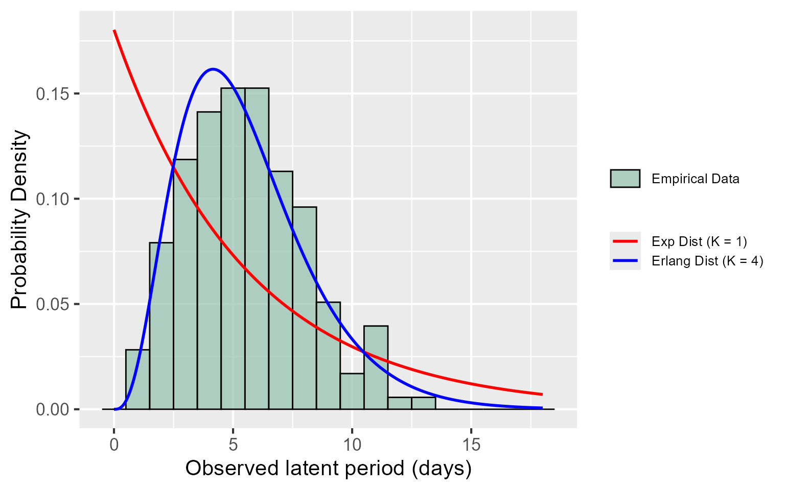
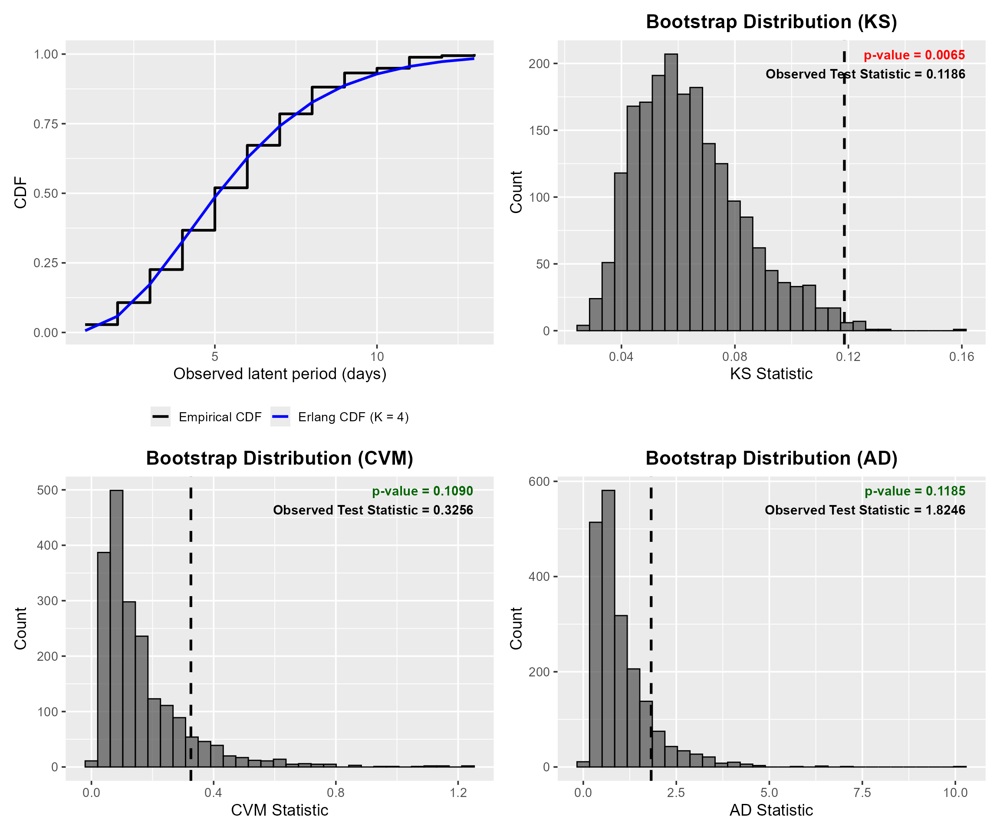
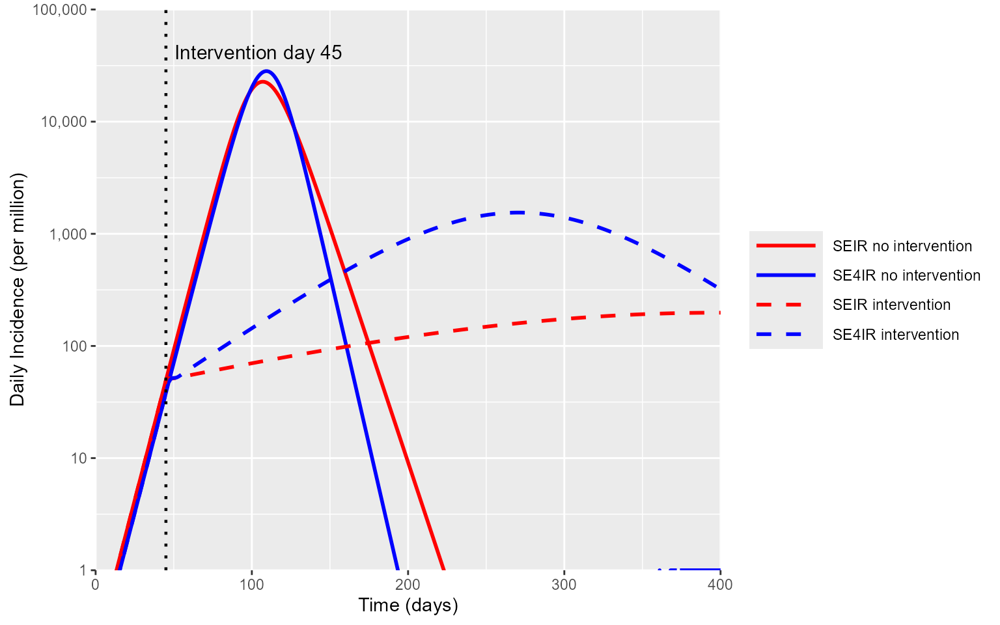
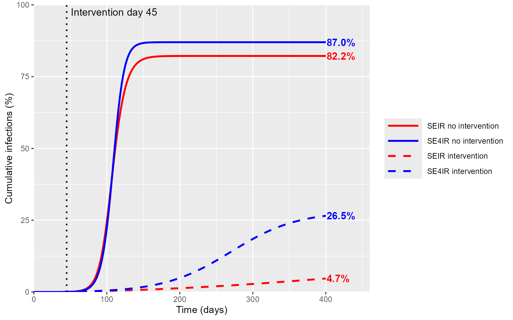

An Application of GenErlangFit to Epidemic Modeling
ExampleApplication.Rmd1. Introduction and Overview
Estimating waiting time distributions and building parsimonious yet realistic compartmental models are common tasks in outbreak analytics. This vignette provides a practical example of how GenErlangFit can be used to support that workflow: first by estimating a suitable latent period distribution from data, and then by using that fitted distribution to parameterize and simulate epidemic models more realistically.
Here we consider latent period data from Xin et al, who estimated the duration of the latent period for COVID-19, defined as the time between exposure and the onset of detectable viral shedding, using it as a proxy for infectiousness. In their cohort of 177 closely monitored contacts of confirmed cases, they inferred a mean latent period of 5.5 days and a 95th percentile of 10.6 days.
Note: the original data consist of interval-censored windows rather than exact event times. For demonstration purposes, we therefore sampled exact latent periods for each participant.
In the sections below, we show how to:
- Fit an Erlang distribution to the latent period data using GenErlangFit
- Assess goodness-of-fit using KS, CVM, and AD statistics
- Use the fitted parameters to parameterize an ODE SEIR-style simulation
- Compare epidemic trajectories assuming an exponentially and erlang distributed waiting time assumptions
Reference: Xin H, Li Y, Wu P, Li Z, Lau EHY, Qin Y, et al. Estimating the Latent Period of Coronavirus Disease 2019 (COVID-19). Clin Infect Dis. 2022;74:1678–81. https://doi.org/10.1093/cid/ciab746.
3. Loading latent period data
Before fitting, the input data must be provided as a single numeric vector of strictly positive observed time-to-event values. In this tutorial, we use the sampled latent period data directly, although the same workflow can also be applied to data imported from a CSV file.
latent_time_data <- c(4, 3, 11, 4, 4, 7, 5, 5, 11, 6, 4, 11, 4, 4, 5, 5, 5, 10, 1, 5,
10, 4, 8, 9, 6, 8, 2, 2, 12, 5, 7, 6, 3, 4, 8, 5, 4, 3, 3, 4,
2, 4, 7, 9, 4, 4, 6, 5, 4, 5, 7, 3, 3, 4, 7, 3, 6, 4, 6, 8,
7, 8, 6, 4, 2, 7, 7, 5, 7, 3, 4, 9, 5, 5, 2, 5, 3, 8, 6, 5,
3, 4, 3, 11, 3, 8, 13, 7, 4, 11, 3, 9, 5, 7, 5, 8, 7, 5, 2, 1,
6, 2, 6, 3, 6, 3, 9, 3, 2, 6, 2, 9, 5, 3, 6, 5, 6, 5, 5, 7,
5, 9, 6, 2, 7, 8, 2, 6, 6, 6, 6, 4, 9, 9, 8, 8, 6, 3, 6, 11,
3, 6, 6, 2, 7, 1, 11, 3, 8, 6, 5, 8, 8, 2, 6, 7, 5, 7, 4, 5,
5, 8, 1, 10, 4, 6, 7, 7, 8, 4, 1, 6, 8, 2, 7, 3, 4)
data_latent <- latent_time_data
Mu <- mean(data_latent)
OG_sigma <- 1 / Mu4. Fit latent period data with GenErlangFit
We next fit the latent period observations using GenErlangFit. This step identifies the Erlang distribution parameters that best match the observed waiting time data. The best-fitting model parameters are then extracted from FitR$Best.
FitR <- GenErlang_Fit("erlang", data_latent, pvaloption = "NIL", ShowFigures = FALSE)
K_star <- FitR$Best$K_star
Lambda_star <- FitR$Best$Lambda_star
print(FitR$ResultsTable)## Model K ErlangLambda LogLikelihood
## 1 Erlang 4 0.7209776 -410.608
Fig 1. Histogram of the observed latent period data with overlaid Exponential PDF and Erlang PDF fitted using GenErlangFit.
5. Evaluate fit with GenErlangFit
The adequacy of the fitted Erlang model is assessed using parametric bootstrap hypothesis testing based on KS, CVM, and AD test statistics with a default significance level of .
FitR_KS <- GenErlang_Fit("erlang", data_latent, pvaloption = "KS", ShowFigures = FALSE)
FitR_CVM <- GenErlang_Fit("erlang", data_latent, pvaloption = "CVM", ShowFigures = FALSE)
FitR_AD <- GenErlang_Fit("erlang", data_latent, pvaloption = "AD", ShowFigures = FALSE)
Fig 2. Goodness-of-fit assessment for the fitted Erlang latent period model. The upper-left panel compares the empirical data CDF and fitted Erlang CDFs. The remaining panels show bootstrap distributions for the KS, CVM, and AD test statistics, with the observed statistic marked by a dashed line.
While the KS test rejects this fit, the CVM and AD tests do not. Since KS is driven by the single largest discrepancy between empirical and fitted CDFs, it can be sensitive to localized departures or tied observations. CVM and AD assess agreement more broadly across the distribution, with AD giving additional emphasis to the tails. For this reason, we proceed with the Erlang model as a parsimonious and defensible choice for the downstream simulations.
6. Simulating SEIR and SE4IR trajectories
In the following sections, we show how latent period information estimated with GenErlangFit can be carried forward into epidemic simulation. We first define a flexible SEIR-style compartmental framework with Erlang staging, then specialize it to two models: the standard SEIR model () and the SEIR model (), with the latter parameterized using the fitted latent period distribution.
Note: Both models are calibrated to have the same mean latent period and early exponential growth rate, reflecting standard practice in which is inferred from early incidence data. We then simulate epidemic trajectories with and without a 50% transmission-reducing intervention.
6.1 Setting up simulation ODE system
SEIR_ERLANG_ODE <- function(t, y, p) {
kE <- p$Esubstates # Number of Erlang E substates
kI <- p$Isubstates # Number of Erlang I substates
dydt <- numeric(kE + kI + 1)
# E1
dydt[1] <- (1 - p$eps) * (p$beta / p$N) * sum(y[(kE + 1):(kE + kI)]) * (p$N - sum(y)) - p$sigma * y[1]
# E2 to EkE
if (kE > 1) {
Ecount <- 1
while (Ecount < kE) {
dydt[Ecount + 1] <- p$sigma * y[Ecount] - p$sigma * y[Ecount + 1]
Ecount <- Ecount + 1
}
}
# I1
dydt[kE + 1] <- p$sigma * y[kE] - p$gamma * y[kE + 1]
# I2 to IkI
if (kI > 1) {
Icount <- 1
while (Icount < kI) {
dydt[Icount + 1 + kE] <- p$gamma * y[Icount + kE] - p$gamma * y[Icount + 1 + kE]
Icount <- Icount + 1
}
}
# Final recovered / removed compartment
dydt[kI + kE + 1] <- p$gamma * y[kI + kE]
list(dydt)
}We now simulate two epidemic models:
- SEIR, which assumes an exponential latent period
- SEIR, which uses the fitted Erlang latent period structure
We generate trajectories under two scenarios:
- No intervention
- With intervention
6.2 Setting up simulation parameters
# 1. Defining Population Parameters
N <- 1e6
T <- 400
tspan <- 0:T
# 2. Define SEIR - Exponential Waiting Time Assumption Params
Ro_1 <- 2.1
gamma <- 0.5
sigma <- OG_sigma
beta_1 <- Ro_1 * gamma
# 3. Solve for SEIR - Exponential Waiting Time Assumption early exp growth rate
r_eq <- c(1 / (gamma * sigma),
1 / gamma + 1 / sigma,
1 - Ro_1)
# R polyroot expects coefficients in increasing powers:
# a0 + a1*x + a2*x^2
x <- polyroot(rev(r_eq))
r_1 <- max(Re(x[abs(Im(x)) < 1e-8]))
# 4. Using the prior K_star solve for SE4IR - Erlang Waiting Time Assumption
# by equating the early exponential growth rate to what was calculated above
nE <- K_star # Obtained from GenErlangFit as number of substates for E
nI <- 1
Ro_n <- (r_1 / gamma) * ((1 + r_1 / (sigma * nE))^nE) / (1 - (1 + r_1 / (gamma * nI))^(-nI))
beta_n <- Ro_n * gamma6.3 Running SEIR and SE4IR simulations without interventions
# Simulate K = 1 SEIR
p1 <- list(
N = N,
beta = beta_1,
sigma = sigma,
gamma = gamma,
Esubstates = 1,
Isubstates = 1,
eps = 0
)
y0_1 <- c(E1 = 0, I1 = 1, R = 0)
SE1IR_noint <- ode(
y = y0_1,
times = tspan,
func = SEIR_ERLANG_ODE,
parms = p1
)
SE1IR_noint <- as.data.frame(SE1IR_noint)
SE1IR_noint$S <- N - rowSums(SE1IR_noint[, c("E1", "I1", "R")])
# Simulate K = nE SE4IR
p4 <- list(
N = N,
beta = beta_n,
sigma = sigma * nE,
gamma = gamma,
Esubstates = nE,
Isubstates = nI,
eps = 0
)
y0_n <- c(rep(0, nE), 1, 0)
names(y0_n) <- c(paste0("E", 1:nE), "I1", "R")
SE4IR_noint <- ode(
y = y0_n,
times = tspan,
func = SEIR_ERLANG_ODE,
parms = p4
)
SE4IR_noint <- as.data.frame(SE4IR_noint)
SE4IR_noint$S <- N - rowSums(SE4IR_noint[, c(paste0("E", 1:nE), "I1", "R")])6.4 Running SEIR and SE4IR simulations with 50% reduction in Beta intervention
# 1. Set up intervention params
intervention_day <- 45
beta_reduction <- 0.5 # 50% reduction
# Time spans
tspan_before <- 0:intervention_day
tspan_after <- intervention_day:T
# 2. Run for E = 1
# Before intervention
SE1IR_before <- ode(
y = y0_1,
times = tspan_before,
func = SEIR_ERLANG_ODE,
parms = p1
)
SE1IR_before <- as.data.frame(SE1IR_before)
# After intervention
p1_after <- p1
p1_after$beta <- beta_1 * beta_reduction
y0_1_after <- SE1IR_before[nrow(SE1IR_before), -1]
y0_1_after <- as.numeric(y0_1_after)
names(y0_1_after) <- names(y0_1)
SE1IR_after <- ode(
y = y0_1_after,
times = tspan_after,
func = SEIR_ERLANG_ODE,
parms = p1_after
)
SE1IR_after <- as.data.frame(SE1IR_after)
# Combine
SE1IR_int <- bind_rows(
SE1IR_before,
SE1IR_after[-1, ]
)
# Add S
SE1IR_int$S <- N - rowSums(SE1IR_int[, c("E1", "I1", "R")])
# 3. Run for E = 4
# Before intervention
SE4IR_before <- ode(
y = y0_n,
times = tspan_before,
func = SEIR_ERLANG_ODE,
parms = p4
)
SE4IR_before <- as.data.frame(SE4IR_before)
# After intervention
p4_after <- p4
p4_after$beta <- beta_n * beta_reduction
y0_4_after <- SE4IR_before[nrow(SE4IR_before), -1]
y0_4_after <- as.numeric(y0_4_after)
names(y0_4_after) <- names(y0_n)
SE4IR_after <- ode(
y = y0_4_after,
times = tspan_after,
func = SEIR_ERLANG_ODE,
parms = p4_after
)
SE4IR_after <- as.data.frame(SE4IR_after)
# Combine
SE4IR_int <- bind_rows(
SE4IR_before,
SE4IR_after[-1, ]
)
# Add S
SE4IR_int$S <- N - rowSums(SE4IR_int[, c(paste0("E", 1:nE), "I1", "R")])From the simulated trajectories, we compute two summary outputs for plotting:
- Daily incidence, computed as the day-to-day difference in the cumulative number infected:
- Cumulative infections:
# 1. Create Cumulative Infection Data Frames
SE1IR_noint_cuminf <- SE1IR_noint %>%
transmute(time = time, cum_inf = (I1 + R) / N * 100)
SE4IR_noint_cuminf <- SE4IR_noint %>%
transmute(time = time, cum_inf = (I1 + R) / N * 100)
SE1IR_int_cuminf <- SE1IR_int %>%
transmute(time = time, cum_inf = (I1 + R) / N * 100)
SE4IR_int_cuminf <- SE4IR_int %>%
transmute(time = time, cum_inf = (I1 + R) / N * 100)
# 2. Create Daily Incidence Data Frames
SE1IR_noint_Inc <- SE1IR_noint %>%
transmute(time = time, inc = c(0, diff(I1 + R)))
SE4IR_noint_Inc <- SE4IR_noint %>%
transmute(time = time, inc = c(0, diff(I1 + R)))
SE1IR_int_Inc <- SE1IR_int %>%
transmute(time = time, inc = c(0, diff(I1 + R)))
SE4IR_int_Inc <- SE4IR_int %>%
transmute(time = time, inc = c(0, diff(I1 + R)))6.5 Comparing epidemic trajectories
Finally, we compare the simulated epidemic trajectories under the SEIR and SE4IR models, with and without intervention.
Comparing Daily Incidence Trajectories

Fig 3. Simulated daily incidence trajectories under the SEIR and SEIR models, with and without intervention.
Comparing Cumulative Infection Trajectories

Fig 4. Simulated cumulative incidence trajectories under the SEIR and SEIR models, with and without intervention.
The resulting daily incidence and cumulative infection curves highlight how differences assumptions on the latent period distribution can affect epidemic dynamics. Without intervention, the exponential model projected 82% cumulative infections compared to 87% under the Erlang model. With intervention, the gap widened substantially. The exponential model predicted 5% cumulative infections while the Erlang model predicted 27%.
This discrepancy arises because models assuming exponential latent periods underestimate the basic reproduction number (R₀) compared to more realistic models incorporating a lower-variance latent period distribution, when calibrated to reproduce the same observed early growth rate. This is an important contrast to the finding that final epidemic size does not depend on the details of the generation interval distribution (e.g., the number of substates describing the latent or infectious states), conditional on being kept constant